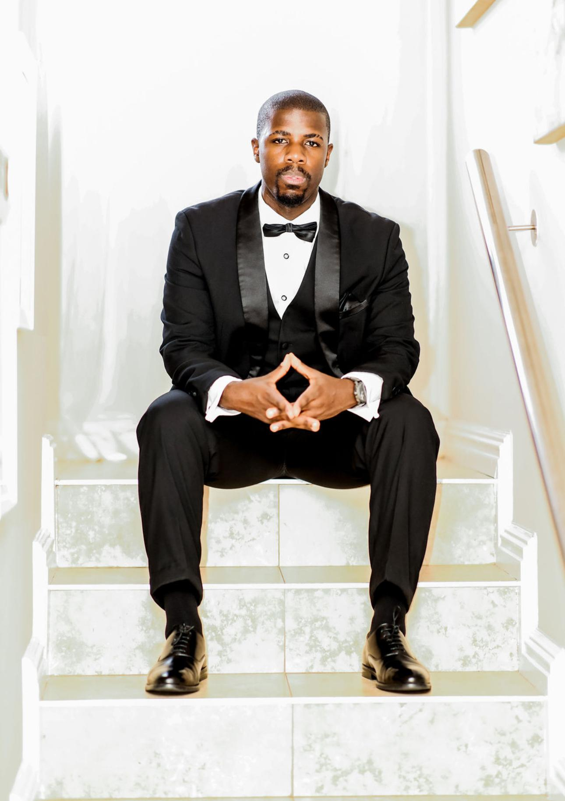

The Founder
Luthando Velleman
Learn more about the person behind Frameworks PTY Ltd.

Career Snapshot:
● 🏫Matriculated at CBC St John’s High School
● 🎓 Sport Management Student
● 📜 UEFA C Licence Headcoach Candidate
● ⚽ Former Semi-Professional Goalkeeper
● 🥅 Goalkeeper Coach
● 🏟️Football Manager
Career Achievements:
● ⚽ Northern Suburbs 1st Division League Title 2026
● ⚽ Grand Challenge Trophy Winner 2026
(Newmans Football Club)
Co-Founder:
Makhuze Batana
About the founder
My name is Luthando Velleman, and I founded Frameworks PTY Ltd with a simple belief: every athlete deserves a safe, reliable surface to perform on. Born in Johannesburg on 30 September 2002, my journey in sport has shaped both my career and my purpose. After matriculating from CBC St John’s High School in Parklands in 2020, I pursued football professionally, earning the opportunity to play as a goalkeeper for Club Deportivo San Pedro Mártir in Las Palmas de Gran Canaria, Spain. I have also represented various clubs across Cape Town and worked as a goalkeeper coach.
From Player to Founder
My professional development has not been limited to sport. Working as a delivery driver for Butlers Pizza taught me discipline, accountability, punctuality, and the importance of taking pride in every task, regardless of its size. Those values remain central to the way I lead Frameworks today. Football taught me a lesson that extends far beyond the game itself: performance begins with the environment.A match can be influenced by the quality of the playing surface, and I have experienced first-hand the difference between facilities that support athletes and those that put them at risk. For a goalkeeper, an uneven field can cost a goal. For a player, it can cost an entire season. I am currently studying Sport Management at Northlink College while completing my UEFA C Licence Coaching qualification through the Scottish Football Association. Through both education and practical experience, I continue to build the expertise required to raise the standard of sporting facilities across South Africa.